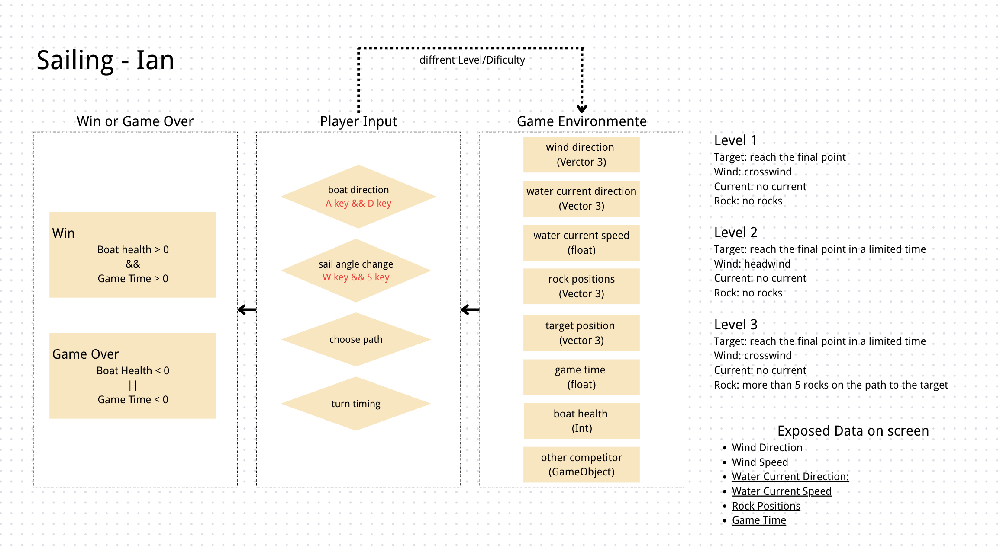

一艘小帆船不会朝你指的方向直行。它取决于风向、帆角、船向与速度——这正是这个游戏要让你“体验”的核心转变。
玩家驾驶一艘小帆船，在变化的风场中前往目标浮标。关键张力在于：风是唯一的动力，但风不总在你想去的方向。
在限时内把船开到绿色浮标处，同时保持船体稳定、避开礁石与危险区。
用 A/D 转舵、W/S 调帆，读懂风的来向并随时调整，让帆吃到最有效的风。
新手以为朝目标开就行；真正的航行是与风对话——读懂风、调好帆、走对路。
我曾参加一次初学者帆船课，意识到船并不会简单地去我想去的地方。它取决于风、帆角、船角和速度。
初学者把船开得离风太近、忘记调帆角，或在需要之字形航线时试图直行。结果船失速、帆拍打、路线漂离目标。
有经验的船员知道：航行意味着读取风，并据此调整船、帆与航线。顶风时走之字形（tack），顺风时放开帆，正侧风最快但横倾最猛。
“帆船 = 开车。我指向哪，船就去哪。只要舵打对，就能到目标。”
“帆船 = 与风谈判。我看风向，决定帆角与航线，让风的力沿着我想要的方向累积。”
这个系统图的核心学习转变：Beginners think sailing means steering toward the target; experts know sailing means reading the wind and adjusting the boat, sail, and route in relation to it.
延伸：晚明航海世界观调研
把这套帆船游戏的「读风 / 调帆 / 航线」机制底座，放进晚明全球海贸的历史文化语境——贸易潮流、白银机制、国内阶层、王朝危机。这是本游戏在世界观层面的拓展。
进入晚明航海世界观 →游戏系统由“环境数据 / 玩家可控数据 / 系统计算结果 / 反馈翻译 / 胜负条件 / 挑战预设”六部分构成。下面给出核心数据流与关卡预设。

| 类别 | 字段 | 说明 |
|---|---|---|
| 环境数据 | windDir / windSpeed | 风的来向与风速（低频漂移） |
| 环境数据 | currentDir / currentSpeed | 水流方向与速度（使船漂移） |
| 环境数据 | rockPositions | 礁石坐标（碰撞=扣血/失败） |
| 环境数据 | targetPos / gameTime / boatHealth | 终点、剩余时间、船体血量 |
| 玩家可控 | boatDir / sailAngle / route / turnTiming | 船向、帆角、航线选择、转向时机 |
| 系统计算 | speed / drift / stability / distToTarget / collisionRisk | 船速、侧漂、稳定、到目标距离、碰撞风险 |
| 反馈翻译 | 帆拍→帆角低效；尾迹变短→减速；航线漂离→风/流推偏；横倾强→稳定下降 | 把不可见数据变成可读反馈 |
横风（crosswind）、无水流、无礁石。目标：到达终点。熟悉转舵与调帆的基本反馈。
顶风（headwind）、限时到达。挑战：无法直行，必须走之字形（tack）抢风前进。
横风、限时、路径上 >5 块礁石。挑战：在读懂风的同时规划避障航线。
本项目通过“原始交互日志 + 阶段反思”记录每一次有意义的人机协作。点击查看完整时间线。
查看开发时间线 →